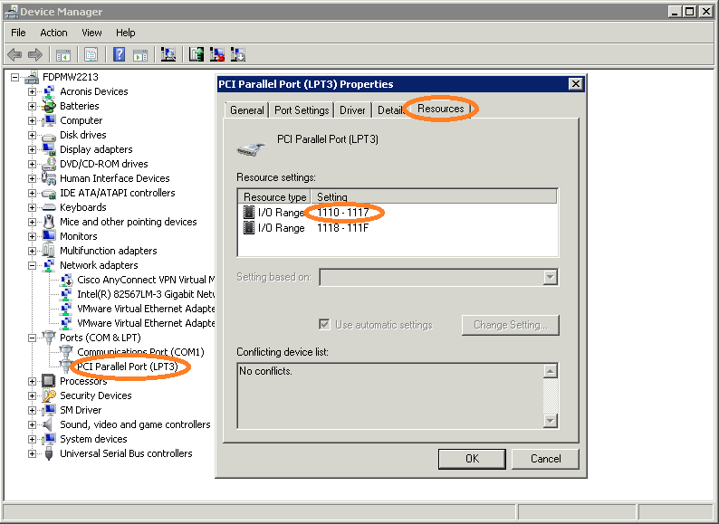
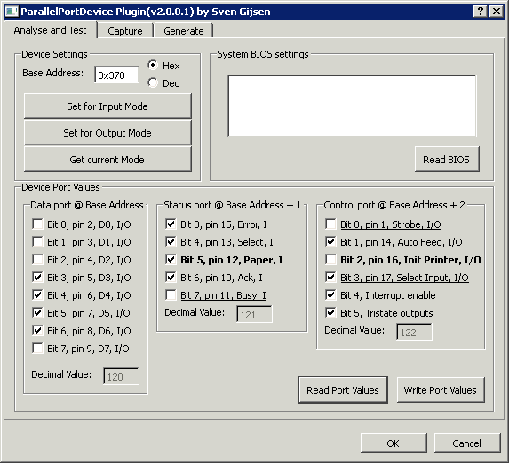
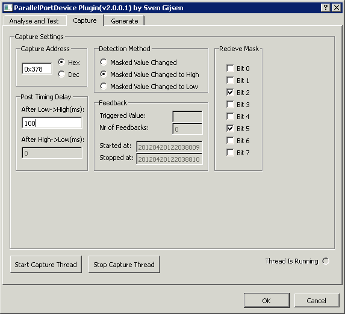
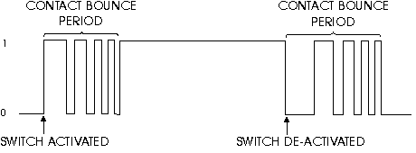
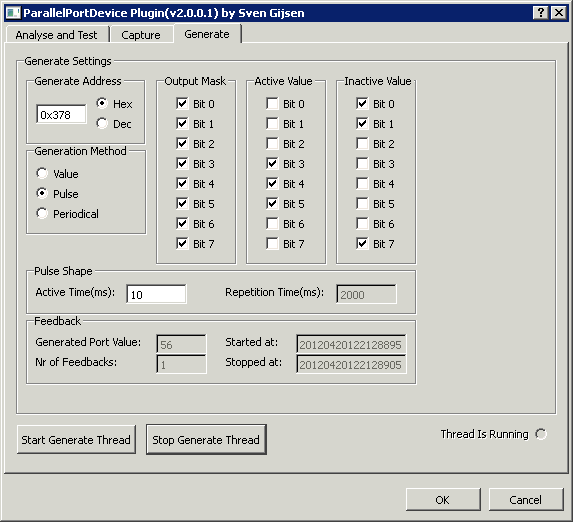

Parallel Port Plug-in Documentation
Version 2.0.0.1 by Sven Gijsen (April 2012)
Table of contents
The Parallel Port Plug-in can fully control a parallel port (LPT). A parallel port is a type of interface found on computers for connecting various peripherals. In computing, a parallel port is a parallel communication physical interface. It is also known as a printer port or Centronics port. The IEEE 1284 standard defines the bi-directional version of the port, which allows the transmission and reception of data bits at the same time.
The Plug-in can not only (single) read/write data but it can also (multiple) capture/generate data which can turn the computer into a simulation/emulation/analysing device. The Plug-In has also features that make it possible to change the Parallel Port Mode and to emit signals.
The Plug-In can be used to derive an object from and use it in the StimulGL scripting environment. There’s also an User Interface defined inside the Plug-in Which can be used to use all the Parallel Ports features directly, you can simply open this UI trought the StimulGL Plugins menu. The following documentation will make use of this UI to explain the Plug-in.
The parallel port normally consists out of an DB25 connector, usually found on the back of your computer. New computer sometimes lack the use of an Parallel Port because many peripherals nowadays are connected with a USB connection. The advantage of the Parallel Port connection is that it can be cheap and easily accessed and the delay time (when for example used as a trigger device) is very low.
The pin outs of DB25 connector is shown in the picture below:
The lines in DB25 connector are divided in to three groups, they are
The details of parallel port signal lines/pins are given below:
Pin No (DB25) | Signal name | Direction | Register - bit | Inverted |
1 | nStrobe | Out | Control-0 | Yes |
2 | Data0 | In/Out | Data-0 | No |
3 | Data1 | In/Out | Data-1 | No |
4 | Data2 | In/Out | Data-2 | No |
5 | Data3 | In/Out | Data-3 | No |
6 | Data4 | In/Out | Data-4 | No |
7 | Data5 | In/Out | Data-5 | No |
8 | Data6 | In/Out | Data-6 | No |
9 | Data7 | In/Out | Data-7 | No |
10 | nAck | In | Status-6 | No |
11 | Busy | In | Status-7 | Yes |
12 | Paper-Out | In | Status-5 | No |
13 | Select | In | Status-4 | No |
14 | Linefeed | Out | Control-1 | Yes |
15 | nError | In | Status-3 | No |
16 | nInitialize | Out | Control-2 | No |
17 | nSelect-Printer | Out | Control-3 | Yes |
18-25 | Ground | - | - | - |
As you know, the Data, Control and status lines are connected to there corresponding registers inside the computer. So by manipulating these registers in program, one can easily read or write to parallel port with programming languages.
The registers found in standard parallel port are:
As there names specifies, Data register is connected to Data lines, Control register is connected to control lines and Status register is connected to Status lines. (Here the word connection does not mean that there is some physical connection between data/control/status lines. The registers are virtually connected to the corresponding lines.). So what ever you write to these registers , will appear in corresponding lines as voltages, Of course, you can measure it with a multimeter. And what ever you give to Parallel port as voltages can be read from these registers(with some restrictions). For example, if we write '1' to Data register , the line Data0 will be driven to +5v. Just like this ,we can programmatically turn on and off any of the data lines and Control lines.
In an IBM PC, these registers are IO mapped and will have unique address. We have to find these addresses to work with parallel port. For a typical PC , the base address of LPT1 is 0x378 and of LPT2 is 0x278. The data register resides at this base address, status register at base address + 1 and the control register is at base address + 2. So once we have the base address , we can calculate the address of each registers in this manner. To find the base address of the parallel port you wish to use you could (on Windows) open up the Device Manager and the search for an LPT Device, go to its properties and check the memory I/O range, see below picture:

In the above example picture we can see the address range 1110 - 1117, this would mean that the base address is at 0x1110 (Please note that this is in the hexadecimal format notation!)
After opening the Parallel Ports Plug-in UI trough the StimulGL Plugins menu the following dialog appears:

By using the first tab you can read/write to/from a parallel port. You can also read the current mode where it is set to. To do this you first have to enter the base address in the Base Address field, see the Parallel Port Registers chapter, you can select whether this value is in the hexadecimal or decimal format. You can then read/set the current ports mode, some modes only allow write or read operations (Output Mode/Input Mode) for the Data Port. In Output mode the read data is not changed when an external device changes the output voltage on a Data Ports pin. In Input mode the read data doesn’t remain the same as the data that was written to the port if a external device changes the output voltage on a Data Ports pin because it’s the changed by the device. After pressing the button read the Plug-in quickly read the current port status and updates all the fields accordingly. To write you can change all the fields and then press the Write button. The read BIOS functionality is not yet implemented in this release.

The Capture dialog allows you to start/stop a separate capture thread that continuously reads the port and send signals (To which you can connect script or run-time objects to using the Qt’s signal/slot mechanism) , the above tabs User Interface is automatically updated. First you enter the address of the register you wish to read. You can select a Detection method which defines when a signal should be triggered. Lines can change from low to high or high to low, e.g. button press or release, and sometimes you only want to check a case from low to high for example. With the receive mask you can check the bits that should be used to validate whether the port value changes, by checking bits you can enable them for detection of signal changes, otherwise they are ignored.
The parallel port is an ideal device to connect an external passive (need no external power for this) switching device to because of its totem-pole TTL output lines. Push-button switches, toggle switches, and electro-mechanical relays all have one thing in common: contacts. It's the metal contacts that make and break the circuit and carry the current in switches and relays. Because they are metal, contacts have mass. And since at least one of the contacts is on a movable strip of metal, it has springiness. Since contacts are designed to open and close quickly, there is little resistance (damping) to their movement.
Because the moving contacts have mass and springiness with low damping they will be "bouncy" as they make and break. That is, when a normally open (N.O.) pair of contacts is closed, the contacts will come together and bounce off each other several times before finally coming to rest in a closed position. The effect is called "contact bounce" or, in a switch, "switch bounce" see below Figure.

Note that contacts can bounce on opening as well as on closing.
The Plug-in has the ability to ignore this bouncing behaviour after the signal line changes for a pre-defined time period using the User Interface Post Timing Delay controls. By using these controls you can set the time in which after a line change (Low-High or High-Low) the capture thread ignores line changes. Normally a value of of one or microseconds is more than enough to prevent the bouncing. Please not that all line changes are than ignored, thus depending on the external device you must choose your settings here, e.g. a switch normally can’t be changed faster by a human <50mSecs.

The Generate dialog allows you to start/stop a separate generate thread that depending on the Generation Method can continuously write different values to the port. Each time a different value is written to the port a similar software signal is emitted (To which you can connect script or run-time objects to using the Qt’s signal/slot mechanism) and also the above User Interface is automatically updated then.
First you enter the address of the register to which you want to write data. You can select a Generation Method which defines how data is written to the register. Selecting Value lets you define a single value (Active Value) that’s is written by the thread to the ports register. Pulse can create a pulse shape signal by defining a Active and a Inactive value which are written to the ports register delayed/separated by a time defined in the Active Time control. The Periodical value does the same as Pulse but than continuously over time each defined Repetition Time. The output mask can be used to define which output pin should be changed accordingly to the Active and the Inactive Value. If a bit/line is deselected in the Output Mask than this value remains unchanged during the threads running time.